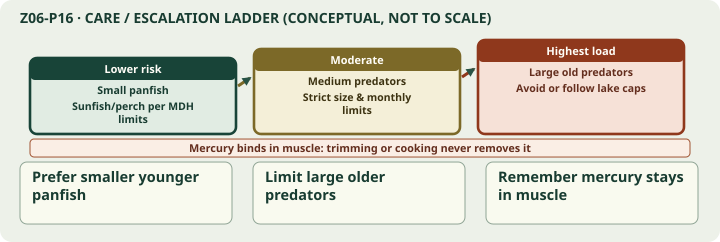

Z06-P16 · Hunting and fishing · New manuscript
Mercury Bioaccumulation in Predatory vs Panfish Species
Reduce dietary mercury exposure by understanding how mercury concentrates in older, larger predatory fish.
When it applies · Selecting fish meals under MDH statewide and waterbody guidelines.
Equipment · Measuring board, MDH statewide/lake chart.

Actions
- Recognize that methylmercury biomagnifies up the aquatic food chain, reaching higher levels in larger, older predatory fish such as big walleye, northern pike, bass, and lake trout.[H04, H05]
- Choose smaller panfish (sunfish, crappie, yellow perch) within lawful limits and MDH meal allowances rather than eating frequent meals of large apex predators.[H04]
- Remember that mercury binds directly to muscle protein, so trimming fat, skinning, or cooking cannot reduce mercury content.[H05]
Failure recognition · Assuming frying or skinning a large northern pike removes mercury exposes households to neurotoxic methylmercury.[H04, H05]
Verify · Kept meal fish align with smaller legal sizes and MDH weekly/monthly mercury meal frequencies.[H04, H05]
Stop or change course · Stop consuming large predatory fish above MDH meal limits, especially for pregnant or nursing people and children under 15.[H04]
Evidence and editorial notes
- H04 · Minnesota Dept. of Health · Fish Consumption Guidance and Waterbody Advisories (Current web edition)
- Section: Waterbody-specific fish consumption advisories (mercury, PFAS, PCBs) · Conditions: Consuming Minnesota caught freshwater fish
Support: MDH issues species-, size-, and waterbody-specific meal-frequency limits for mercury, PCBs, and PFAS, with stricter limits for pregnant/nursing people and children under 15.
Limitations: Visual fish health and water clarity cannot detect mercury, PFAS, or PCBs; check current MDH waterbody lookup before eating caught fish. · Conflicting evidence: None noted.
Editorial note: Mandatory Z06 public-health fish advisory gate. · Specialist reviewer: Public-health toxicologist and MDH reviewer
Primary source · checked 2026-11-25 - H05 · Minnesota Dept. of Health · Fish Consumption Guidance Program Overview (Current web edition)
- Section: Trimming fat and skin limits for organic contaminants vs mercury · Conditions: Cleaning and preparing advisory-screened freshwater fish
Support: Trimming belly/dorsal fat and removing skin can reduce fat-soluble PCBs, but mercury binds in muscle tissue and cannot be trimmed or cooked out.
Limitations: Cleaning methods never replace checking waterbody-specific advisories or respecting do-not-eat notices. · Conflicting evidence: None noted.
Editorial note: Distinguishes PCB trimming from mercury persistence. · Specialist reviewer: Environmental health specialist
Primary source · checked 2026-11-25
Source lineage · New manuscript (Z06 P17 fish advisories) · Classification · New manuscript.